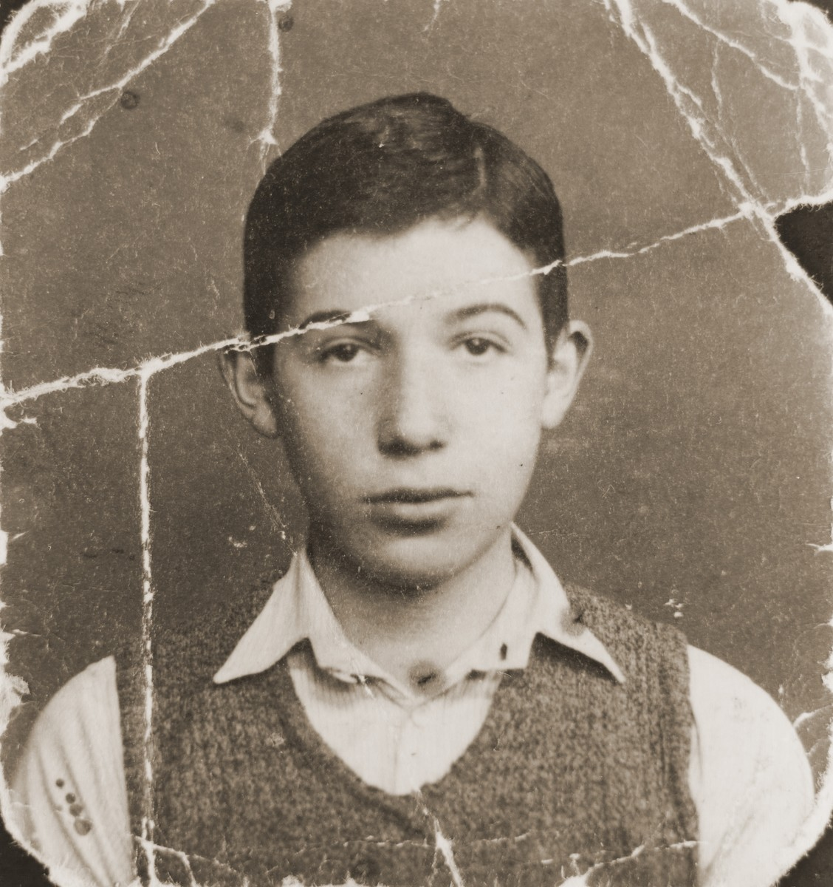

Original picture.
Cleaned up picture.
Here is a link to a tutorial I found.
"Image into Drawing using Photoshop"
I used that tutorial to make this image below. The tutorial stood out to me because I'm a terrible illustrator and this looked like a decent way to achieve the illustrated look without actually having to draw. Making the alternate image was simple enough, although I probably should've used a cleaner background. Making the negative created a bit of noise that gave me some issues. Otherwise, this was a very easy tutorial to follow along with.